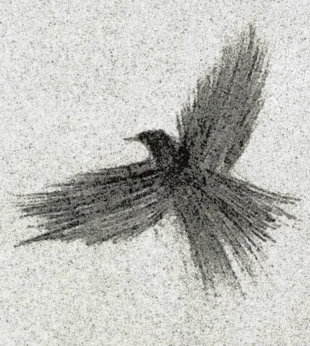

Shazer Ali
24100053@lums.edu.pk

I am a Research Associate in the Computer Science Department at the Lahore University of Management Sciences (LUMS), where I have the privilege of conducting research under the supervision of Dr. Zafar Ayyub Qazi, Dr. Ihsan Ayyub Qazi, Dr. Basit Shafiq and Dr. Agha Ali Raza.
I graduated from the Lahore University of Management Sciences in 2024. Shortly after, I joined as a Research Associate, working on 5G cellular networks, Ethereum 2.0 blockchain networks, and scalable software for LLM-powered applications.
Research Experience
| Jun, 2024 – Present Research Associate - Network Lab & Blockchain Lab, LUMS | |
|  |
|
| |
| Sep, 2023 – May, 2024 Undergraduate Research Assistant - Network Lab, LUMS | |
| |
| May, 2022 – Sep, 2022 Undergraduate Research Assistant - Blockchain Lab, LUMS | |
| |
Teaching Experience
| Jan 15, 2024 - May 15, 2024 | CS 3812: Introduction to Blockchain (Teaching Assistant) |
|---|---|
| Sep 1, 2023 - Dec 26, 2023 | CS 582: Distributed Systems (Teaching Assistant) |
| Jun 3, 2023 - Jul 7, 2023 | CS 100: Introduction to Programming (Teaching Assistant) |
Open-Source Contribution
| Aug 1, 2023 | Flower (A Friendly Federated Learning Framework) |
|---|
Awards
| 2024 | High Distinction Award |
|---|---|
| 2021-2023 | Dean's Honor List |
| 2022 | ACE of SPADES |
Extracurricular Activities
I firmly believe in maintaining a work-life balance, a principle that has enabled me to actively participate in various societies and sports teams at LUMS.
| 2021 | Member of LUMS Community Service Society (LCSS) |
|---|---|
| 2021 | Member of LUMS Society : SPADES |
| 2022 | Assistant Director of IT Department : SPADES |
| 2022 | Team Member of LUMS Cricket Team |
| 2023 | Team Member of LUMS Squash Team |
| 2023 | Director of IT Department : SPADES |
Misc
- I have always been sketching as hobby, visit my art collection here!
- I often try to follow the helpful advice given by my mentor, Dr. Ihsan Ayyub Qazi. (While I do my best to apply these principles in my research journey, there are often times when I fall short ;-;).
- A fantastic resource that greatly assisted me during my application for doctoral studies.
- One of the most memorable match from last premier league, where Liverpool F.C greatly humbled Manchester United F.C by 7-0. Yes, I'm L.F.C fan !
- One of my favourite songs from my favourite Rock band, Linkin Park. Listen here !